Румыния - Румынский лей
1 лей
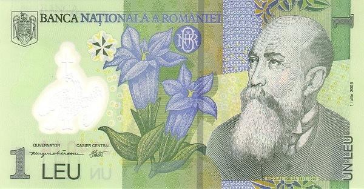 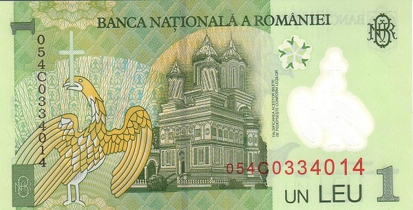Лицевая сторона - учёный-историк, писатель и политический деятель Николае Йорга
Обратная сторона - собор в Куртя-де-Арджеше
5 леев
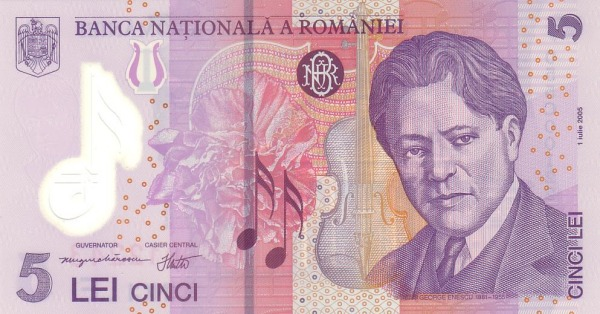 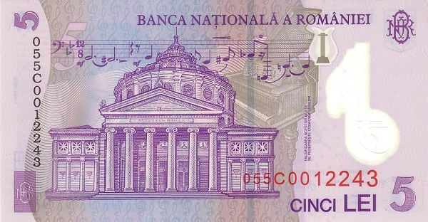Лицевая сторона - композитор Джордже Энеску
Обратная сторона - концертный зал Ateneul Român в Бухаресте
10 леев
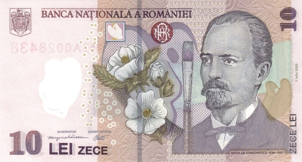 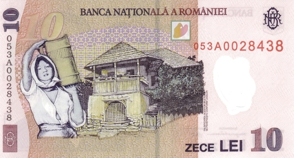Лицевая сторона - фрагмент картины художника: сельский дом в Олтении
Обратная сторона - художник Николае Григореску
50 леев
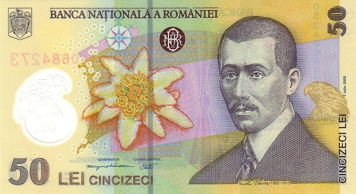 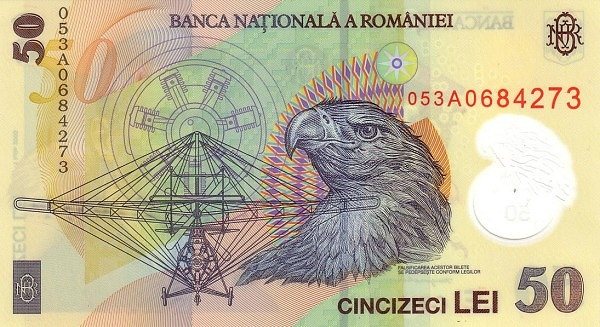Лицевая сторона - авиатор и авиаконструктор Аурел Влайку
Обратная сторона - чертёж аэроплана, голова орла
100 леев
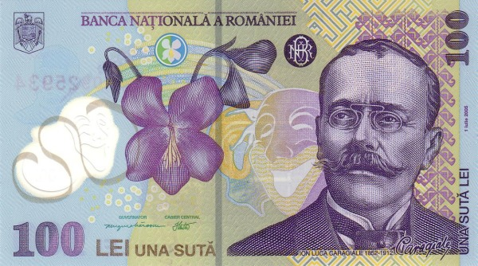 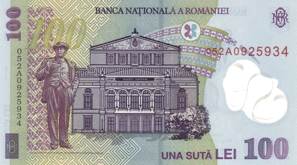Лицевая сторона - писатель-драматург Ион Лука Караджале
Обратная сторона - здание Национального театра в Бухаресте, памятник писателю
200 леев
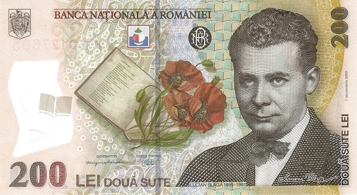 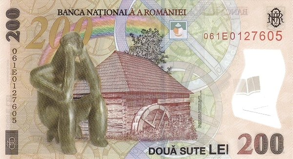Лицевая сторона - философ, дипломат, деятель культуры Лучиан Блага
Обратная сторона - водяная мельница, фигурка Хамаджийской культуры
500 леев
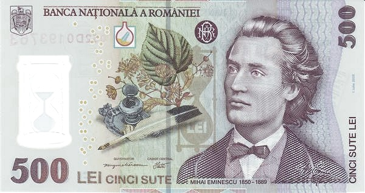 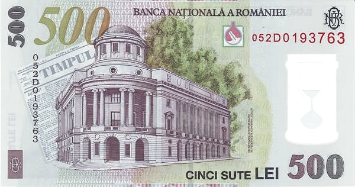Лицевая сторона - поэт Михай Эминеску
Обратная сторона - здание Центральной университетской библиотеки г. Яссы